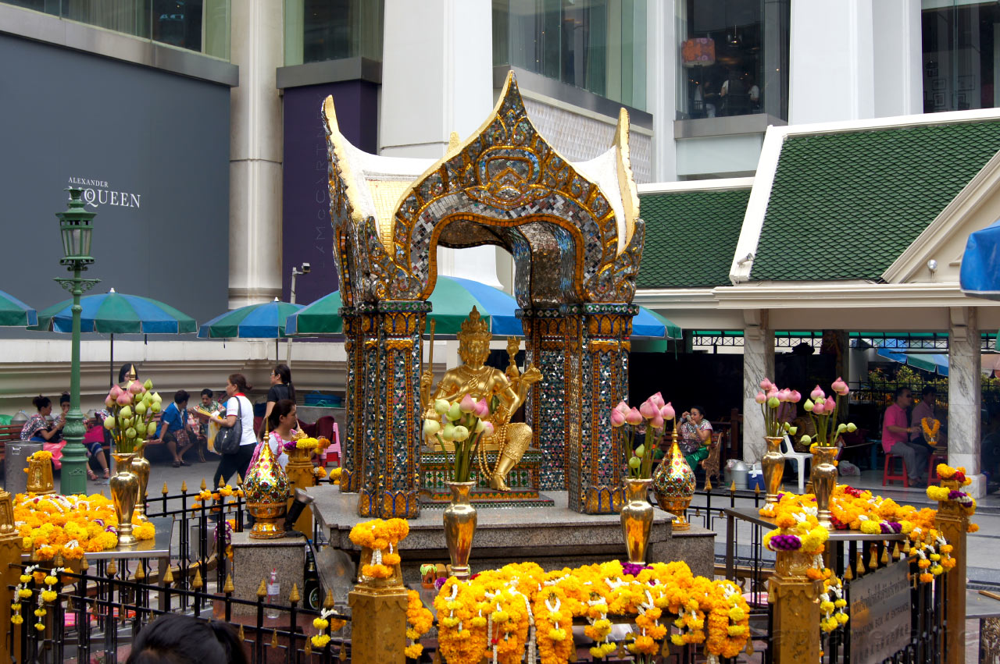
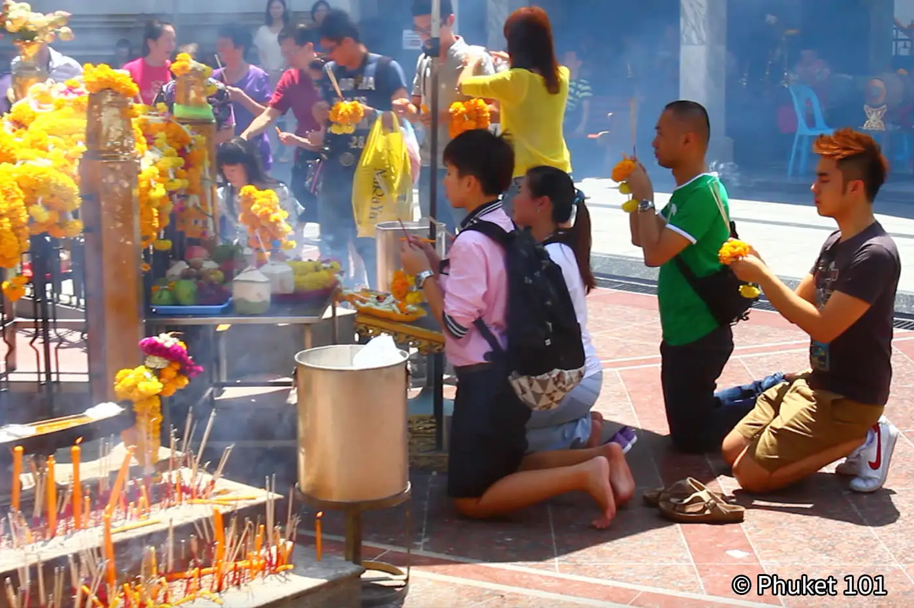
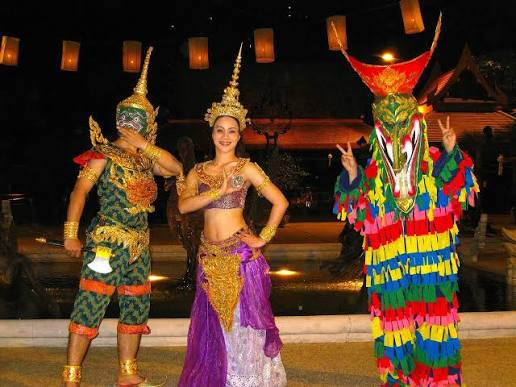
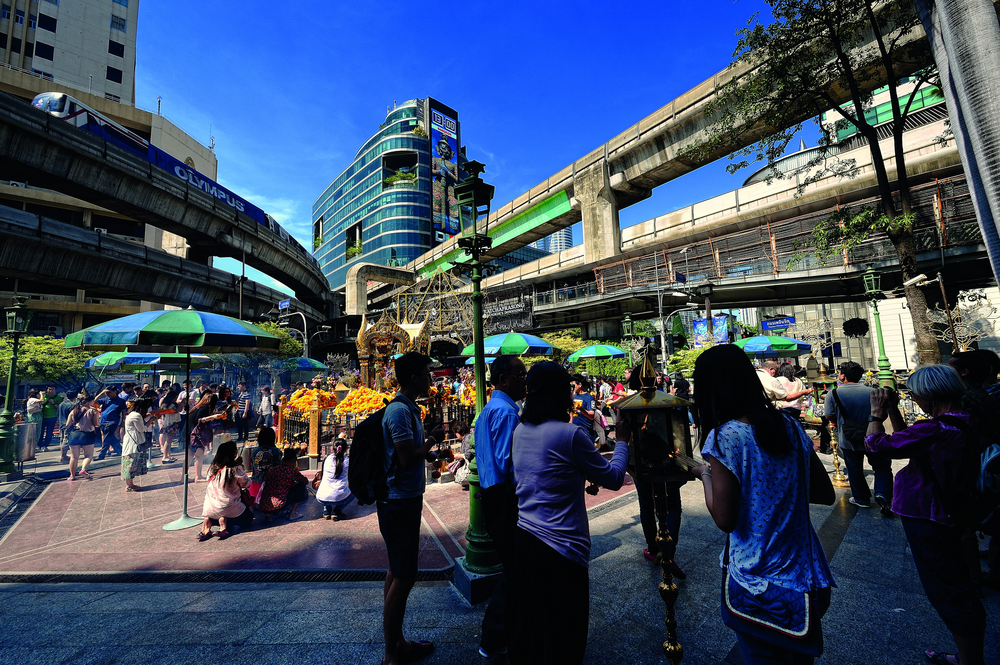
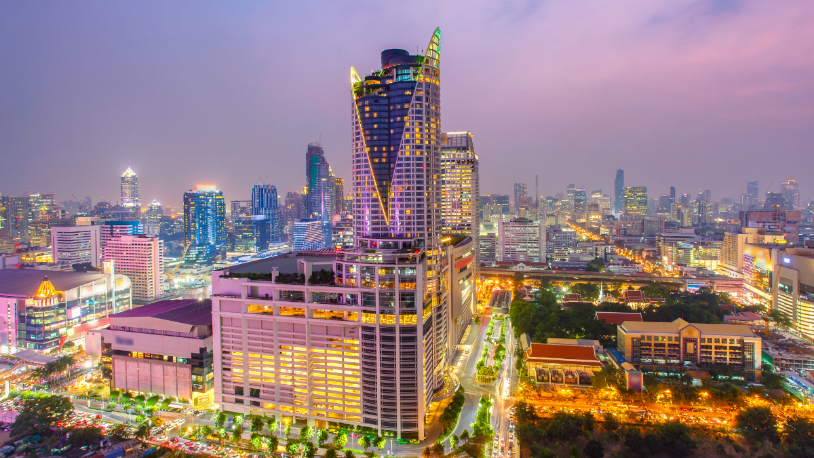
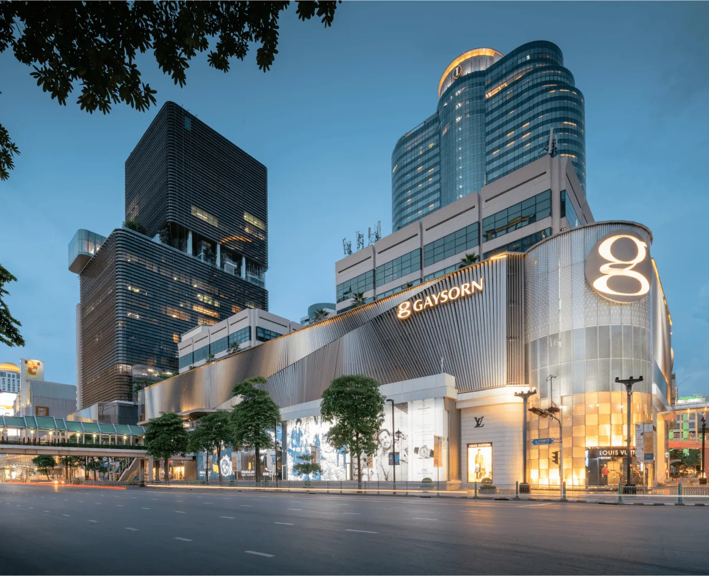
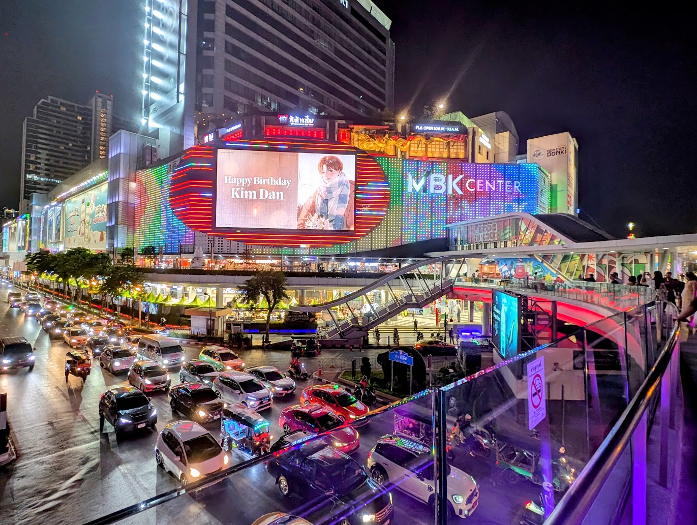

Travel Diary |
Главная | Страны | Советы | Места |

Святилище Эраван (Erawan Shrine) — одно из самых известных индуистских святилищ Бангкока, расположенное прямо в центре современного города. Оно посвящено Брахме — индуистскому божеству, связанному с созиданием, и известно прежде всего статуей четырёхликого Брахмы.
Святилище особенно популярно среди местных жителей и туристов. Сюда приходят помолиться, оставить подношения и попросить удачи, здоровья, успеха в работе или благополучия. Несмотря на небольшие размеры, место практически всегда окружено людьми, а рядом часто можно увидеть традиционные тайские танцы и услышать музыку.
Святилище Эраван находится в самом центре Бангкока, в районе Патхум Ван, рядом с крупными торговыми центрами и оживлёнными улицами города.
От святилища примерно:
Святилище Эраван очень удобно включать в маршрут по современному центру Бангкока, особенно если вы планируете посетить торговые центры Siam и район Ratchaprasong.
Вход в Святилище Эраван — бесплатный.
Посетить святилище и посмотреть на статую Брахмы можно бесплатно. Если вы хотите совершить подношение, приобрести цветочную гирлянду, свечи или благовония, за них придётся заплатить отдельно.
Ежедневно примерно с 06:00 до 22:00.
Святилище открыто большую часть дня, однако атмосфера вокруг него меняется в зависимости от времени:
Лучше всего приходить утром или вечером, когда жара не такая сильная. При этом святилище интересно посетить и днём, если вы всё равно гуляете по району Siam и Ratchaprasong.
Святилище Эраван находится в одном из самых удобных для туристов районов Бангкока. В отличие от многих достопримечательностей старого города, сюда очень легко добраться на общественном транспорте.
Самый удобный способ добраться до святилища — надземное метро BTS. Нужно доехать до станции Chit Lom, после чего пройти пешком несколько минут. Святилище находится рядом с крупной транспортной развязкой и хорошо заметно с улицы.
Можно заказать Grab или воспользоваться обычным такси. Однако в центральном Бангкоке часто бывают пробки, поэтому в часы пик поездка на автомобиле может занять значительно больше времени, чем поездка на BTS.
Через центральные районы Бангкока проходят многочисленные автобусные маршруты. Однако для туриста автобус обычно менее удобен, чем BTS, особенно если вы впервые находитесь в городе.
Если вы уже находитесь возле Siam, CentralWorld или других торговых центров центрального Бангкока, до святилища можно спокойно дойти пешком.

Главная достопримечательность святилища — статуя четырёхликого Брахмы. Однако интерес представляет не только сама статуя, но и то, как местные жители совершают здесь молитвы и подношения.
В центре святилища находится золотистая статуя Брахмы с четырьмя лицами, обращёнными в разные стороны. Каждая сторона символически связана с различными аспектами жизни и считается частью единого образа божества.
Посетители подходят к статуе, зажигают благовония, ставят цветочные гирлянды и совершают молитву. Многие приходят сюда не как туристы, а как верующие, поэтому важно относиться к происходящему уважительно.

Одной из наиболее заметных особенностей Святилища Эраван являются выступления традиционных тайских танцоров.
Танцы могут заказывать люди, которые хотят выразить благодарность Брахме за исполнение желания или совершить обещанное подношение. Танцоры выступают под традиционную музыку, а представление обычно проходит непосредственно рядом со святилищем.
Возле святилища можно увидеть большое количество цветочных гирлянд, благовоний и свечей. Посетители покупают их в расположенных рядом точках и используют во время молитвы.
Если вы хотите просто посмотреть на святилище, покупать подношения необязательно. Можно спокойно находиться рядом и наблюдать за происходящим, не мешая людям совершать религиозные обряды.

Святилище находится прямо посреди одного из самых оживлённых коммерческих районов Бангкока. С одной стороны здесь находятся современные торговые центры и небоскрёбы, а рядом с ними — небольшое традиционное святилище.
Именно этот контраст делает Святилище Эраван интересным местом для туристического маршрута: буквально за несколько минут можно перейти от шумных улиц и огромных торговых центров к спокойной религиозной атмосфере.
Святилище Эраван находится в самом центре современного Бангкока, поэтому вокруг него расположено большое количество магазинов, торговых центров, ресторанов и других интересных мест.

Один из крупнейших торговых центров Бангкока находится практически рядом со Святилищем Эраван.
Здесь можно совместить: Святилище Эраван → CentralWorld → ужин и прогулка по центру Бангкока.
Один из самых известных торговых центров Бангкока, расположенный примерно в 10–15 минутах ходьбы от святилища.
Внутри находятся магазины известных брендов, рестораны, кафе и большой океанариум SEA LIFE Bangkok Ocean World.

Современный торговый центр класса люкс, расположенный непосредственно рядом с районом Ratchaprasong. Подходит для прогулки по центральной части Бангкока и посещения магазинов и ресторанов.

Один из главных районов современного Бангкока. Здесь расположено сразу несколько крупных торговых центров, а также станции BTS Siam, поэтому район удобно использовать как следующую точку маршрута.
Помните, что это действующее религиозное место. Несмотря на большое количество туристов, для многих местных жителей Святилище Эраван имеет религиозное значение.
Одевайтесь уважительно. Строгого дресс-кода, как в некоторых буддийских храмах, здесь обычно нет, но слишком откровенная одежда нежелательна.
Не мешайте людям во время молитвы. Можно фотографировать святилище, но лучше не фотографировать людей крупным планом без разрешения.
Не трогайте подношения. Цветочные гирлянды, свечи и другие предметы возле статуи являются частью религиозных обрядов.
Следите за вещами. Святилище находится в очень оживлённом районе Бангкока, поэтому в большой толпе лучше держать телефон и кошелёк в закрытом кармане или сумке.
Необязательно покупать подношения. Если вы пришли как турист, можно просто посмотреть на святилище и понаблюдать за происходящим.
Святилище Эраван удобно посещать вместе с другими достопримечательностями центрального Бангкока.
Например:
Святилище Эраван не требует большого количества времени — обычно достаточно 20–40 минут, чтобы осмотреть его и почувствовать атмосферу места. Поэтому лучше воспринимать его не как отдельную достопримечательность на несколько часов, а как одну из остановок во время прогулки по современному центру Бангкока.
Особенно интересно сочетать Святилище Эраван с торговыми центрами Siam и CentralWorld: так за один день можно увидеть современный Бангкок, его религиозные традиции, огромные торговые центры и оживлённые улицы центрального района.